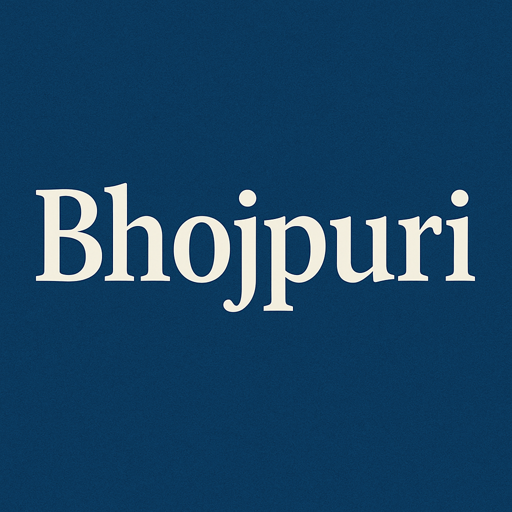
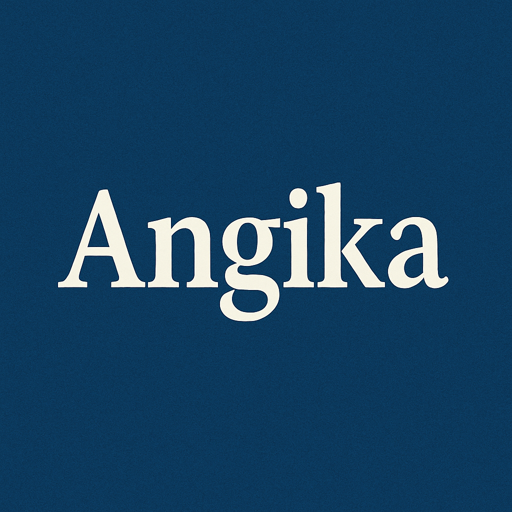
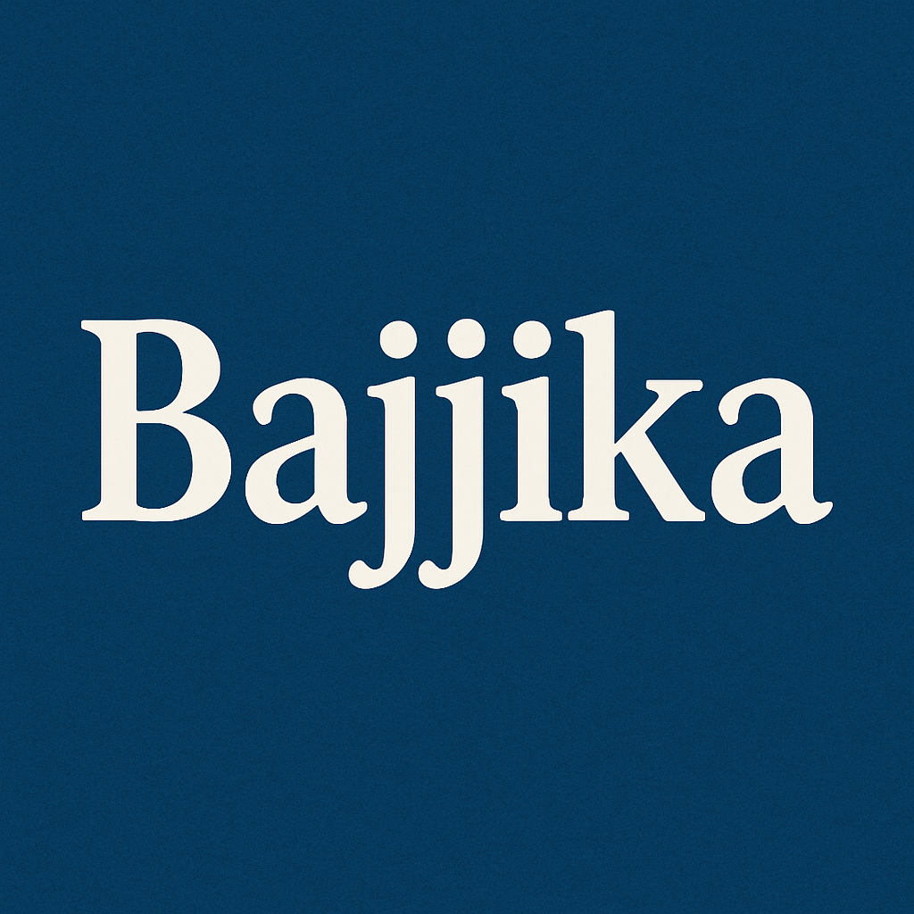

Explore Bihar's Major Dialects

Bhojpuri
Western & Central Bihar
One of the most widely spoken dialects with a rich tradition of folk songs and cinema. Known for its expressive and vibrant nature.
Explore MoreMaithili
Northern Bihar (Mithila Region)
An ancient language with rich literary heritage. Known for Mithila paintings and sophisticated poetry traditions.
Explore MoreMagahi
South-Central Bihar (Magadh Region)
Also known as Magadhi, it has connections to ancient Magadhi Prakrit and has a significant folk literature tradition.
Explore More

Angika
Eastern Bihar (Anga Region)
A dialect with ancient roots in the Anga kingdom, known for its unique phonetics and rich cultural expressions.
Explore More

Bajjika
North-Western Bihar
A dialect influenced by both Maithili and Bhojpuri, with distinctive grammatical features and vocal traditions.
Explore More
Surjapuri
North-Eastern Bihar (Kishanganj)
A unique blend of Bengali, Maithili and other languages, creating a distinct cultural identity in border regions.
Explore More